Your browser doesn't support the features required by impress.js, so you
are presented with a simplified version of this presentation.
For the best experience please use the latest Chrome, Safari, or Firefox 10.
Lancement du réseau de surveillance citoyen OREANET
Sylvie Fiat, Pascal Dumas, Mehdi Adjeroud
IRD - GOPS
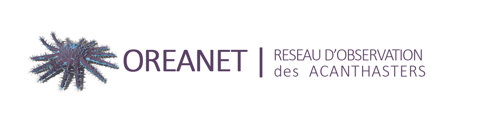
Acanthaster planci
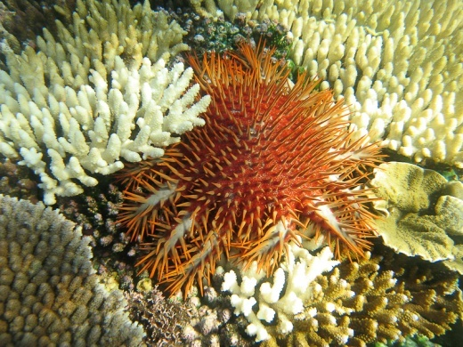
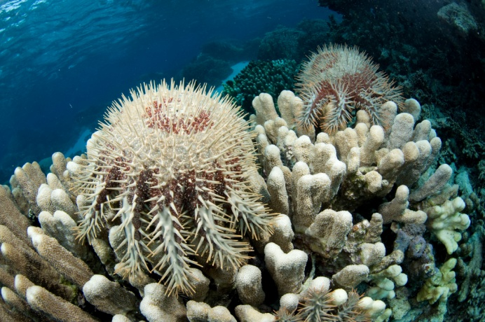
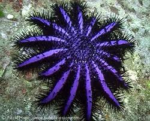
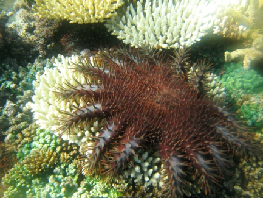
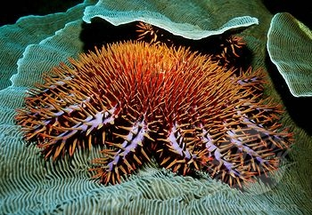
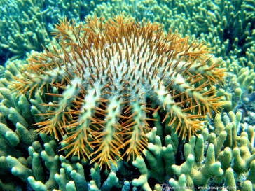
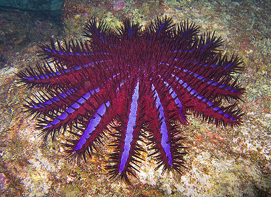
"Coussin de belle-mère"
"Couronne du Christ"
"Couronne d'épines"
Oreanet en Nouvelle-Calédonie
Lancement le 15 décembre 2015
- 31 observations (dont 5 IRD)
- 23 observateurs différents
- 502 visites sur le site depuis le lancement
- 3 mois > 100 visites = lancement + pub
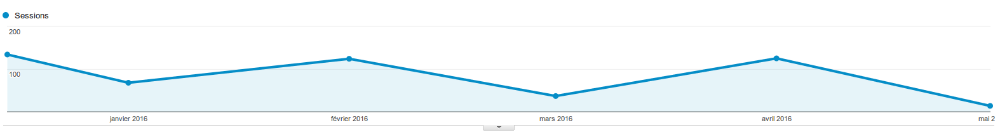
Oreanet au Vanuatu
Lancement en 2014
- 42 observations (dont 28 VFD/IRD)
- 12 explosions > 100
- Max jusqu'à 12.000 en 2014 !
- 8 nettoyages déclenchés
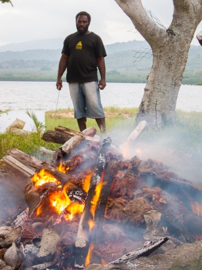
Oreanet aux Îles Fidji
Lancement en 2016
- Démarrage fin avril
- Etat des lieux inconnu : plus de 300 îles !
- 1 étudiant de Master
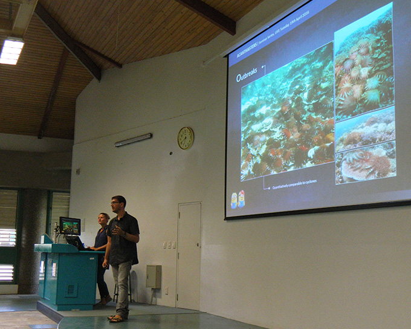
Initiative « OCEANIA REGIONAL ACANTHASTER NETWORK »
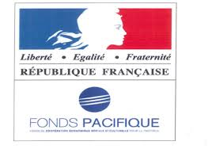


GOPS
Grand observatoire de l'environnement et de la biodiversité terrestre et marine du Pacifique sud

Et le petit nouveau...
En collaboration avec Opération Cétacé et en complément de l'application mobI
Le formulaire d'observation des mammifères marins